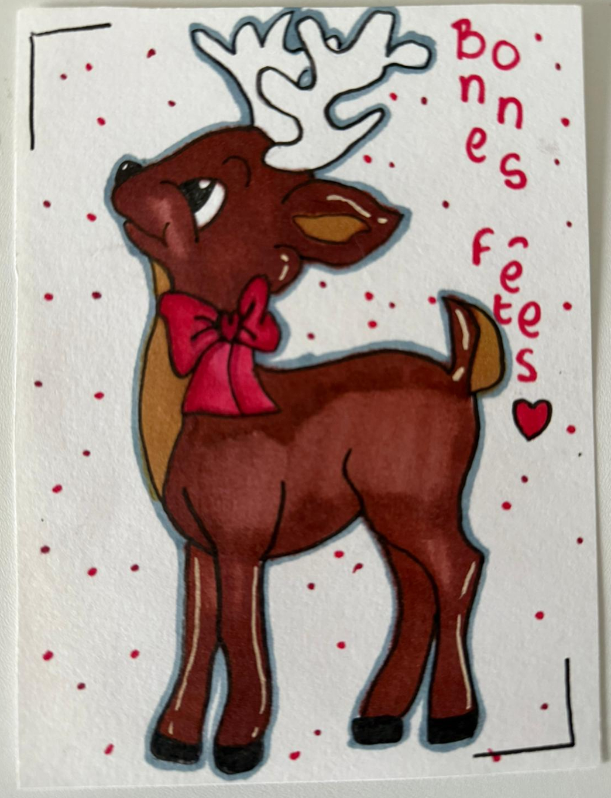

Chaque année, mes collègues et moi concevons des lettres (dessin d'un côté, mot réconfortant de l'autre) afin de les distribuer dans des maisons de retraite, Ehpad et hôpitaux pour les célébrations de fin d'année.
 Nous sommes convaincus que ce petit geste à l'apparence anodine permet d'apporter un peu de chaleur et de joie aux personnes isolées, souvent âgées ou malades : tout le monde mérite de connaître l'amour et l'affection.
Nous considérons que c'est notre manière de nous engager pour la société et surtout pour nos anciens à qui on doit énormément et dont on a tant de choses à apprendre.